Welcome to our restaurant's website!
Taste our Hungarian dishes in the heart of Budapest. Spend a relaxing afternoon on our restaurant's terrace, or step inside to enjoy our spacious interior. We always welcome you with open arms. Contact us for reservations.
Menu

Contact
Reservations for today or tomorrow, or for larger groups, please call us. For all other inquiries, feel free to write us an e-mail.
Adress: Klauzál street 23., Budapest, 1072
Telephone: +36 1 616 0202
E-mail: klauzal.horvath@gmail.com
Gallery
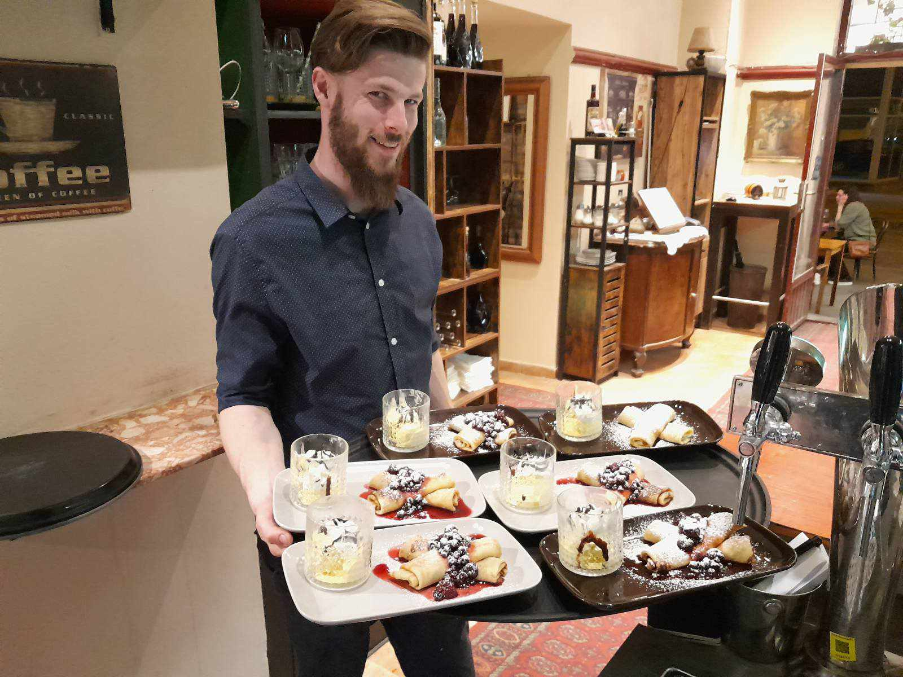
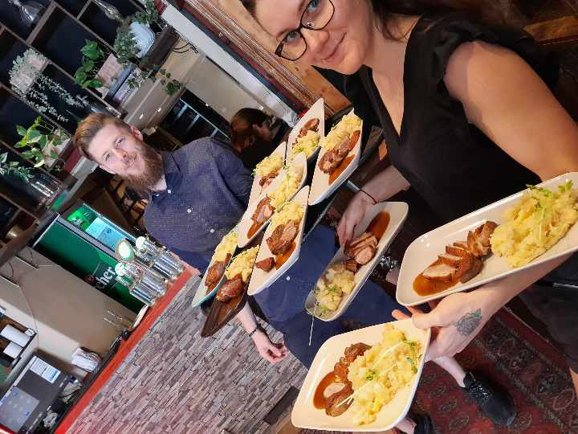
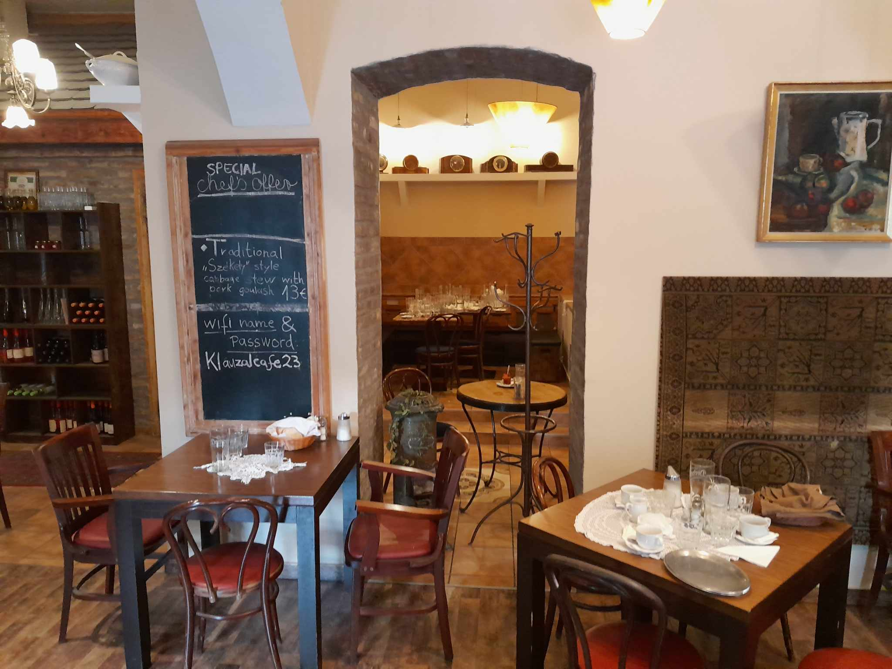
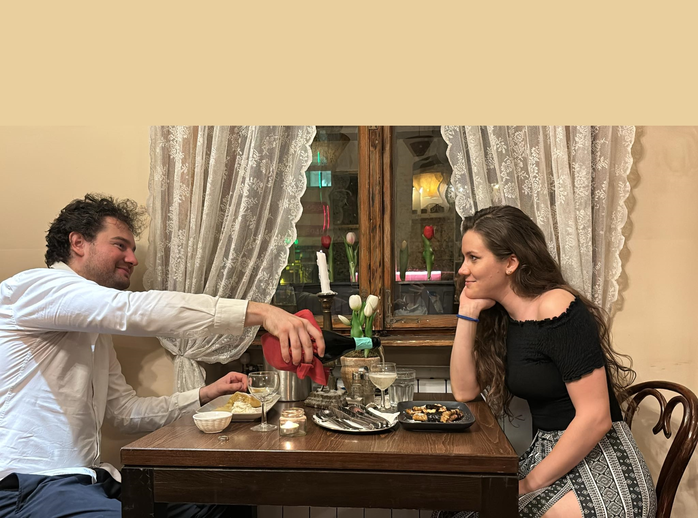
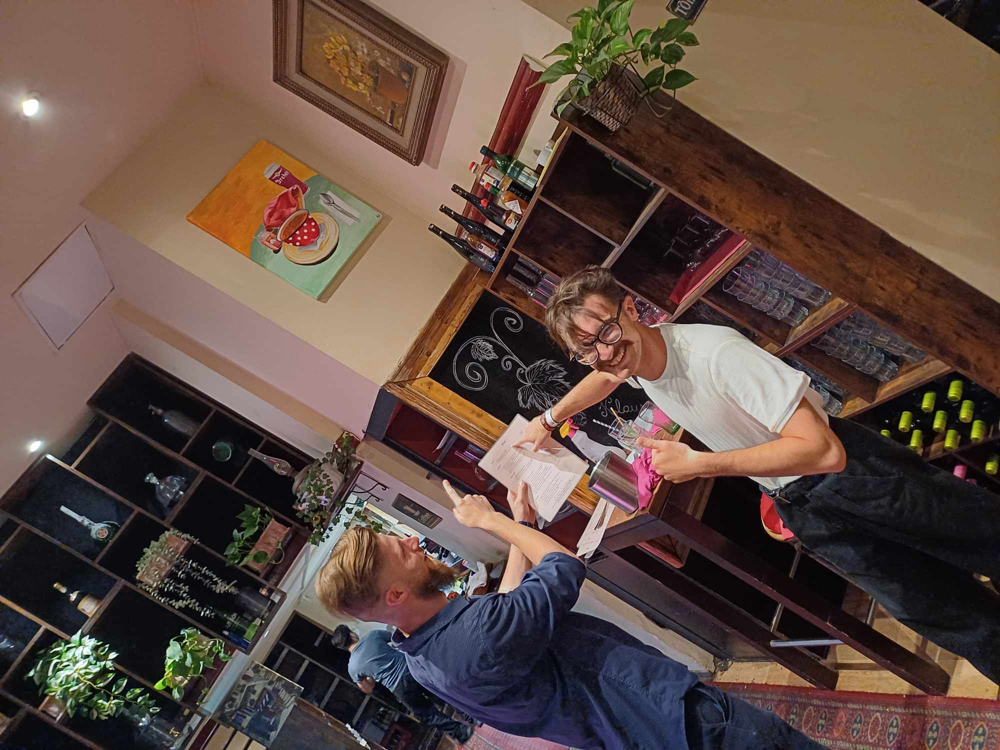
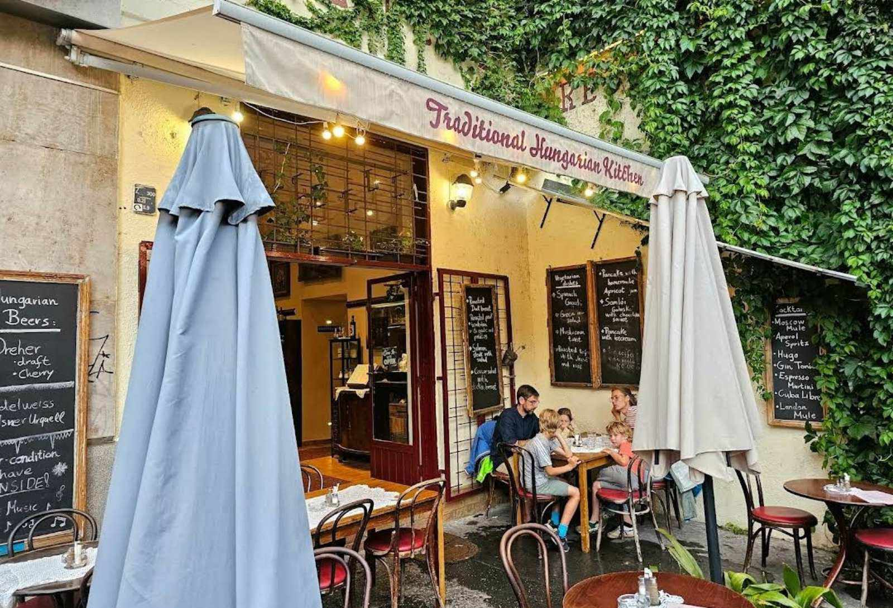
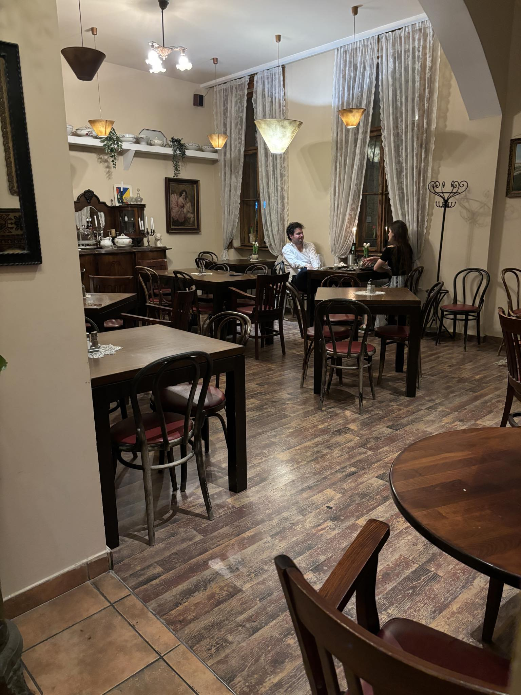
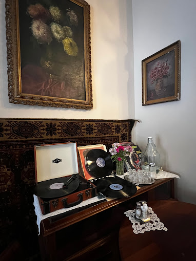
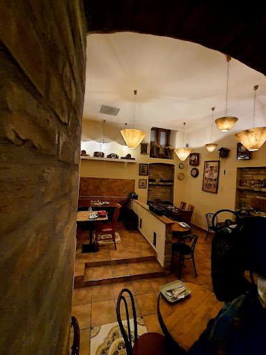
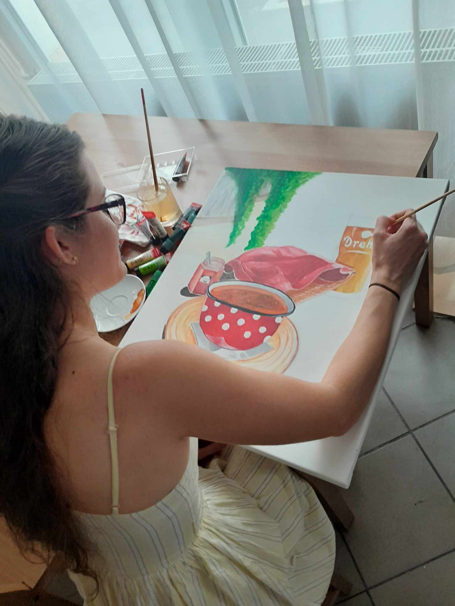
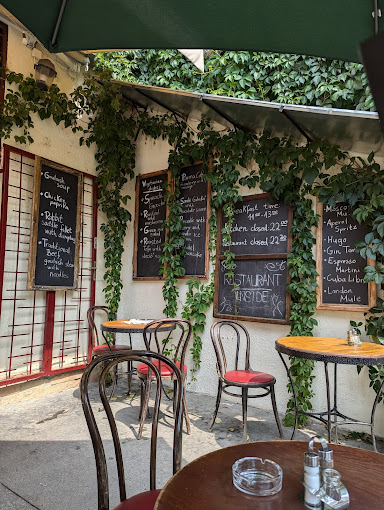
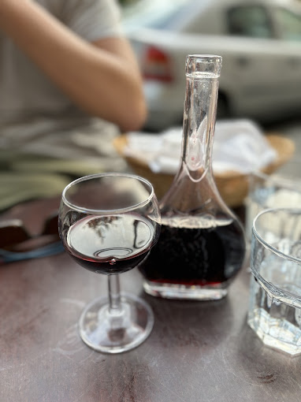
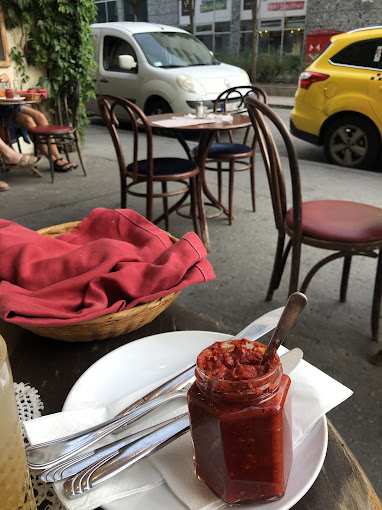
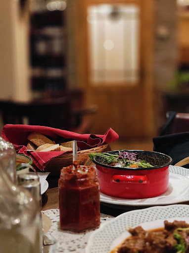
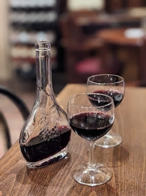
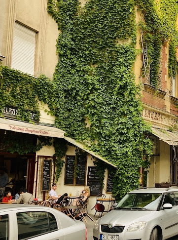
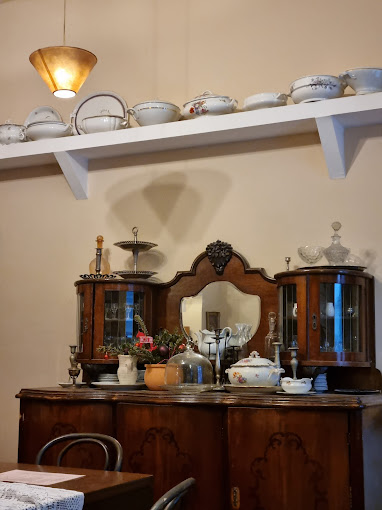
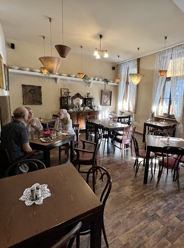